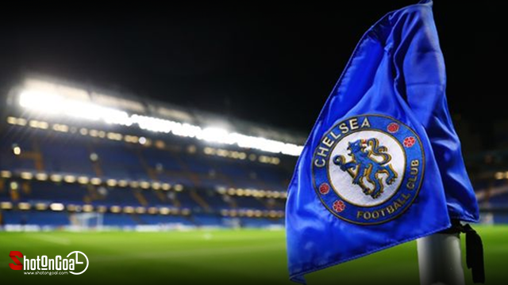
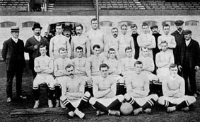
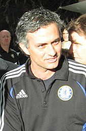
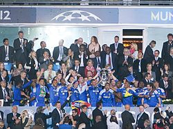
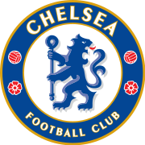
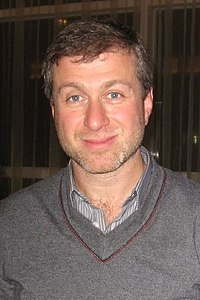

สโมสรฟุตบอลเชลซี (อังกฤษ: Chelsea Football Club) เป็นสโมสรฟุตบอลอาชีพที่ตั้งอยู่ในเขตฟูลัม, ลอนดอน ซึ่งเล่นอยู่ในพรีเมียร์ลีก ลีกสูงสุดของฟุตบอลอังกฤษ ก่อตั้งขึ้นใน ค.ศ. 1905 มีสนามเหย้าคือสแตมฟอร์ดบริดจ์ เชลซีเป็นหนึ่งในสโมสรที่ประสบความสำเร็จมากที่สุดของอังกฤษ โดยชนะเลิศการแข่งขันมากกว่า 30 รายการ รวมทั้งชนะเลิศลีกสูงสุด 6 สมัย และชนะเลิศถ้วยยุโรป 8 รายการ risus nullam. Pretium nibh ipsum consequat nisl vel pretium. In eu mi bibendum neque egestas เชลซีชนะเลิศฟุตบอลลีกสูงสุดสมัยแรกใน ค.ศ. 1955, ชนะเลิศเอฟเอคัพสมัยแรกใน ค.ศ. 1970 และชนะเลิศถ้วยยุโรปครั้งแรกในรายการยูฟ่าคัพวินเนอร์สคัพ ค.ศ. 1971 ต่อมา สโมสรเข้าสู่ยุคตกต่ำในช่วงปลายทศวรรษ 1970–80 ก่อนจะกลับมาทำผลงานโดดเด่นได้อีกครั้งในช่วงทศวรรษ 1990 โดยประสบความสำเร็จในฟุตบอลถ้วยหลายรายการ และตลอดสองทศวรรษที่ผ่านมา (ค.ศ. 2000–20) ถือเป็นยุคทองของสโมสร พวกเขาชนะเลิศพรีเมียร์ลีก 5 สมัย, ยูฟ่าแชมเปียนส์ลีก 2 สมัย และ ยูโรปาลีก 2 สมัยได้ในช่วงเวลานี้ เชลซีเป็นหนึ่งในห้าสโมสรที่ชนะเลิศการแข่งขันรายการหลักของยูฟ่าครบสามรายการช (ยูฟ่าแชมเปียนส์ลีก, ยูโรปาลีก และ ยูฟ่าคัพวินเนอร์สคัพ) รวมทั้งเป็นสโมสรเดียวที่ชนะเลิศการแข่งขันสามรายการดังกล่าวได้สองสมัยในแต่ละรายการ และยังเป็นสโมสรเดียวในกรุงลอนดอนที่ชนะเลิศยูฟ่าแชมเปียนส์ลีก
สีชุดเหย้าของสโมสรคือเสื้อเชิ้ตและกางเกงขาสั้นสีน้ำเงินพร้อมถุงเท้าสีขาว ตราสโมสรคือรูปสิงโตอาละวาดถือไม้เท้า สโมสรมีคู่อริได้แก่ อาร์เซนอล, ทอตนัมฮอตสเปอร์ และ ลีดส์ ยูไนเต็ด เชลซีเป็นหนึ่งในสโมสรที่มีผู้ติดตามมากที่สุดในโลก และเป็นสโมสรที่มีมูลค่าทีมมากที่สุดเป็นอันดับ 6 ของโลกด้วยมูลค่า 2.13 พันล้านปอนด์ (2.5 พันล้านดอลลาร์) และยังเป็นหนึ่งในสโมสรที่ร่ำรวยที่สุดในโลกโดยมีรายได้สูงที่สุดเป็นอันดับ 8 จำนวน 428 ล้านยูโรในฤดูกาล 2017–18 นับตั้งแต่ ค.ศ. 2003 เป็นต้นมา สโมสรอยู่ภายใต้การบริหารของโรมัน อับราโมวิช มหาเศรษฐีชาวรัสเซีย-อิสราเอล
ใน ค.ศ. 1904 กุส เมียร์สซื้อสนามกรีฑาสแตมฟอร์ดบริดจ์ โดยมีเป้าหมายที่จะเปลี่ยนเป็นสนามฟุตบอล และยื่นข้อเสนอให้ฟูลัมที่อยู่ใกล้เคียงกันเช่าสนาม แต่ถูกปฏิเสธ ดังนั้นเมียร์สจึงเลือกที่จะก่อตั้งสโมสรของเขาเองเพื่อใช้สนามนี้ เนื่องจากมีทีมชื่อฟูลัมอยู่ในเมืองแล้ว จึงใช้ชื่อสโมสรว่าเชลซีซึ่งเป็นเมืองที่อยู่ติดกัน ชื่ออื่น ๆ ที่เคยอยู่ในตัวเลือกคือ สโมสรฟุตบอลเคนซิงตัน, สโมสรฟุตบอลสแตมฟอร์ดบริดจ์ และสโมสรฟุตบอลลอนดอน เชลซีก่อตั้งขึ้นเมื่อวันที่ 10 มีนาคม ค.ศ. 1905 ที่เดอะไรซิงซันผับ (ปัจจุบันคือ เดอะบุตเชอส์ฮุก) อยู่ตรงข้ามประตูทางเข้าหลักในปัจจุบันบนถนนฟูลัม และเชลซีได้รับเลือกให้เข้าสู่ฟุตบอลลีกหลังจากนั้นไม่นาน ผู้จัดการทีมคนแรกของสโมสรคือ จอห์น รอเบิร์ตสัน ซึ่งคุมทีมในฐานะ ผู้เล่น-ผู้จัดการทีม
เชลซีเลื่อนชั้นไปเล่นในลีกสูงสุด (ดิวิชันหนึ่ง) ได้ในฤดูกาลที่สอง แต่ทีมยังมีผลงานไม่คงเส้นคงวานัก และสลับเลื่อนชั้น-ตกชั้นบ่อยครั้งในช่วงปีแรก ๆ พวกเขาผ่านเข้าถึงเอฟเอคัพรอบชิงชนะเลิศ 1915 ในยุคของ เดวิด คัลเดอร์เฮด อดีตนักฟุตบอลชาวสกอตแลนด์ แต่ก็แพ้ให้แก่เชฟฟีลด์ยูไนเต็ดที่โอลด์แทรฟฟอร์ด และจบอันดับสามในดิวิชันหนึ่ง ค.ศ. 1920 ซึ่งเป็นการจบอันดับในลีกที่ดีที่สุดของสโมสรในขณะนั้น[22] เชลซีมีชื่อเสียงจากการเซ็นสัญญานักเตะดาวรุ่ง[23] และดึงดูดผู้คนจำนวนมาก สโมสรมีผู้เข้าชมฟุตบอลอังกฤษเฉลี่ยสูงสุดใน 10 ฤดูกาล[24] ได้แก่ ฤดูกาล 1907–08, 1909–10,1911–12, 1912–13, 1913–14 และ 1919–20 พวกเขาเป็นเคยผ่านเข้ารอบรองชนะเลิศเอฟเอคัพในปี 1920 และ 1932 และเล่นอยู่ในลีกสูงสุดตลอดช่วงทศวรรษที่ 1930 ด้วยการคุมทีมของ เลสลี ไนท์ตัน ชาวอังกฤษ แต่ผลงานไม่น่าประทับใจนักโดยมักจะจบด้วยอันดับกลางตารางและท้ายตารางเป็นส่วนมาก และอนาคตของสโมสรในช่วงนั้นไม่แน่นอนนัก
บิลลี แบร์เรลล์ นักฟุตบอลชาวสกอตแลนด์เข้ามาคุมทีมตั้งแต่ ค.ศ. 1939–52 แต่เชลซีก็ไม่ประสบความสำเร็จในการแข่งขันรายการสำคัญ ฟุตบอลอังกฤษได้รับผลกระทบจากช่วงสงครามโลกครั้งที่สอง และเชลซีประสบปัญหาภายในสโมสรหลายอย่าง พวกเขาทำได้เพียงประคองอันดับอยู่กลางตารางเป็นส่วนมาก โดยความสำเร็จในทศวรรษ 1940 ของเชลซีมีเพียงการชนะเลิศฟุตบอลถ้วยการกุศล (War Cup) 2 สมัยเท่านั้น
อดีตกองหน้าอาร์เซนอลและทีมชาติอังกฤษ เท็ด เดร็ก ได้เข้ามาคุมทีมใน ค.ศ. 1952 และปรับสโมสรให้ทันสมัยด้วยการโละกลุ่มทหารและข้าราชการวัยเกษียณออกจากการเป็นทีมงาน และได้ปรับทีมเยาวชนและการซ้อมให้เข้มข้นมากขึ้น และซื้อสตาร์เข้ามามากมาย กระทั่งพวกเขาได้ถ้วยแรกในประวัติศาสตร์ในฤดูกาล 1954–55 โดยการเป็นแชมป์ดิวิชันหนึ่ง และอันที่จริงเชลซีจะเป็นทีมแรกจากอังกฤษที่ได้ไปแข่งขันฟุตบอลระดับสโมสรยุโรป แต่ถูกสมาคมฟุตบอลอังกฤษห้ามไว้เนื่องจากสถานการณ์ในประเทศ เดร็กถูกปลดจากตำแหน่งใน ค.ศ. 1961 และแทนที่ด้วย ทอมมี โดเชอร์ตี ที่เข้ามาในฐานะผู้เล่น-ผู้จัดการทีม
โดเชอร์ตี้ได้ทำการปรับปรุงระบบทีมใหม่ เขาได้ปล่อยนักเตะเก่าหลายคน และได้ซื้อนักเตะใหม่มากมาย หนึ่งในนั้นคือปีเตอร์ ออสกู๊ด ตำนานสโมสร และพวกเขาก็คว้าแชมป์ลีกคัพได้ในฤดูกาล 1964–65 เอาชนะเลสเตอร์ซิตีที่มีกอร์ดอนแบงส์ ผู้รักษาประตูชื่อดังไปด้วยผลประตูรวมสองนัด 3–2 ต่อมา เดฟ เซ็กตัน เข้ามาแทนที่โดเชอร์ตี้ ก่อนที่จะคว้าแชมป์เอฟเอคัพ 1970 ชนะลีดส์ยูไนเต็ด 2–1 ในนัดแข่งใหม่หลังจากเสมอกันในนัดแรก 2–2[32] ในปีต่อมาพวกเขาก็คว้าแชมป์ถ้วยยุโรปได้เป็นครั้งแรกในรายการยูฟ่าคัพวินเนอร์สคัพ ชนะเรอัลมาดริด 2–1 ในนัดแข่งใหม่หลังจากเสมอกันในนัดแรก 1–1
เชลซีถึงยุคตกต่ำในช่วงทศวรรษ 1970 เมื่อพวกเขาขายผู้เล่นคนสำคัญหลายราย ทีมมีการเปลี่ยนแปลงผู้จัดการทีมหลายคน ได้แก่ เอ็ดดี แม็คเครดี, เคน เชลลิโต, แดนนี บลังค์ฟลาวเวอร์ส และ เจฟฟ์ เฮิร์สต์ แต่ก็ทำผลงานได้ไม่ดี และมักจะอยู่ท้ายตาราง และย่ำแย่ต่อเนื่องจนถึงขั้นตกชั้นในปลายทศวรรษ 1970 แต่แล้วใน ค.ศ. 1982 เคน เบตส์ ได้เข้ามาซื้อสโมสรด้วยราคาหนึ่งล้านปอนด์ และเขาก็ปรับปรุงสนามสแตมฟอร์ดบริดจ์ให้ดีขึ้น แต่นั่นก็ไม่ได้ช่วยอะไรมาก ซ้ำร้ายพวกเขาเกือบจะตกชั้นไปดิวิชันสาม ในปีเดียวกัน แต่ใน ค.ศ. 1984 จอห์น นีล ได้ดึงทีมขึ้นชั้นมาจากดิวิชันสองด้วยการคว้าแชมป์ในปี 1983–84 และตกชั้นอีกครั้งในฤดูกาล 1987–88 ก่อนที่จะเลื่อนชั้นอีกครั้งในฤดูกาล 1988–89 ด้วยแต้มที่ห่างจากแมนเชสเตอร์ซิตีถึง 17 คะแนน และเชลซีไม่ตกชั้นจากลีกสูงสุดอีกเลยนับจากนั้น
ใน ค.ศ. 1992 เชลซีซื้อผู้เล่นเข้ามาหลายคน และเข้าชิงชนะเลิศเอฟเอคัพฤดูกาล 1993–94 ด้วยฝีมือของ เกล็นน์ ฮ็อดเดิล แต่แพ้แมนเชสเตอร์ยูไนเต็ด 0–4 ต่อมา รุด กุลลิต เข้ามาทำทีมในฐานะผู้เล่น-ผู้จัดการทีมใน ค.ศ. 1996 และพาทีมคว้าแชมป์เอฟเอคัพได้ใน ค.ศ. 1997 โดยชนะมิดเดิลส์เบรอ 2–0 ต่อมา กุลลิทถูกแทนที่โดย จิอันลูกา วิอัลล ซึ่งพาทีมคว้าแชมป์ฟุตบอลถ้วยหลายรายการ เริ่มต้นด้วยลีกคัพ 1998 โดยชนะมิดเดิลส์เบรอไปได้อีกครั้งในช่วงต่อเวลาพิเศษ 2–0 และยังคว้าแชมป์ยูฟ่าคัพวินเนอร์สคัพสมัยที่สองด้วยการชนะชตุทท์การ์ท 1–0 ตามด้วยแชมป์ยูฟ่าซูเปอร์คัพด้วยการชนะเรอัลมาดริด 1–0 ตามด้วยแชมป์เอฟเอคัพ 2000 ชนะแอสตันวิลลา 1–0 และยังได้ร่วมแข่งขันยูฟ่าแชมเปียนส์ลีกเป็นครั้งแรกแต่ก็ตกรอบ 8 ทีมสุดท้ายโดยแพ้บาร์เซโลนา วิอัลลี่ถูกปลดในฤดูกาลถัดมา และแทนที่ด้วยเกลาดีโอ รานีเอรี ซึ่งพาทีมเข้าชิงชนะเลิศเอฟเอคัพได้อีกครั้งใน ค.ศ. 2002 แต่แพ้อาร์เซนอล 0–2
เคนเบตส์ได้ขายสโมสรให้กับโรมัน อับราโมวิช มหาเศรษฐีชาวรัสเซียในราคา 140 ล้านปอนด์ และทีมได้ทุ่มซื้อผู้เล่นชื่อดังมากมาย โดยถือเป็นจุดเริ่มต้นประวัติศาสตร์ของสโมสรในการยกระดับเป็นทีมระดับโลกจนถึงปัจจุบันเขาได้ปลดรานีเอรี่ออกจากตำแหน่ง และแทนที่ด้วยโชเซ มูรีนโย ซึ่งเข้ามาเป็นตำนานผู้จัดการทีมที่นำความสำเร็จมาสู่สโมสรเริ่มจากการคว้าแชมป์พรีเมียร์ลีกฤดูกาล 2004–05 ด้วยคะแนนสูงถึง 95 คะแนน และเป็นครั้งแรกที่สโมสรคว้าแชมป์ลีกได้นับตั้งแต่เปลี่ยนชื่อมาจากฟุตบอลดิวิชั่นหนึ่ง และยังเอาชนะลิเวอร์พูลในนัดชิงชนะเลิศลีกคัพ 3–2
เชลซีป้องกันแชมป์ลีกได้อีกครั้งในปีต่อมา ถือเป็นสโมสรที่ห้าในอังกฤษที่ได้แชมป์ลีก 2 สมัยติดต่อกันนับตั้งแต่สงครามโลกครั้งที่สอง ต่อมาในฤดูกาล 2006–07 เชลซีได้แชมป์ฟุตบอลถ้วยสองรายการได้แก่ เอฟเอคัพ (ชนะแมนเชสเตอร์ยูไนเต็ด 1–0) และลีกคัพ (ชนะอาร์เซนอล 2–1) แต่มูรีนโยได้ถูกปลดในฤดูกาลต่อมาจากการมีปัญหากับผู้บริหาร อัฟราม แกรนท์ เข้ามาคุมทีมต่อ และพาทีมเข้าชิงชนะเลิศยูฟ่าแชมเปียนส์ลีกครั้งแรกแต่แพ้จุดโทษแมนเชสเตอร์ยูไนเต็ด[44] และยังได้รองแชมป์อีกสองรายการทั้งในพรีเมียร์ลีกและลีกคัพ
ในฤดูกาล 2008–09 หลุยส์ ฟิลิปเป สโคลารี เข้ามาคุมทีมแต่ก็โดนปลด และกุส ฮิดดิงค์เข้ามารับตำแหน่งชั่วคราว เขาพาทีมผ่านเข้ารอบรองชนะเลิศยูฟ่าแชมเปียนส์ลีกแต่แพ้บาร์เซโลนาด้วยกฏประตูทีมเยือน แต่ยังจบอันดับสามในลีก และคว้าแชมป์เอฟเอคัพด้วยการชนะเอฟเวอร์ตัน 2–1 ต่อมาในฤดูกาล 2009–10 การ์โล อันเชลอตตี เข้ามาคุมทีม และประเดิมด้วยการชนะจุดโทษแมนเชสเตอร์ยูไนเต็ดในเอฟเอคอมมิวนิตีชีลด์ ก่อนจะพาทีมคว้าแชมป์พรีเมียร์ลีกด้วยการยิงประตูมากที่สุดในประวัติศาสตร์จำนวน 103 ประตู และยังป้องกันแชมป์เอฟเอคัพได้โดยชนะพอร์ตสมัท 1–0 ต่อมา ในฤดูกาล 2010–11 เชลซีเริ่มต้นด้วยการแพ้แมนเชสเตอร์ยูไนเต็ดในเอฟเอคอมมิวนิตีชีลด์ 1–3 ก่อนจะจบฤดูกาลด้วยรองแชมป์ลีกและตกรอบทุกรายการ และอันเชลอตตีถูกปลด
ในฤดูกาล 2011–12 อังแดร วีลัช-โบอัช เข้ามาคุมทีมแต่ทำผลงานย่ำแย่จนโดนปลด โรแบร์โต ดี มัตเตโอ เข้ามารักษาการ และพาทีมคว้าแชมป์ยูฟ่าแชมเปียนส์ลีกได้เป็นสมัยแรกโดยเอาชนะไบเอิร์นมิวนิกในการดวลจุดโทษ ถือเป็นสโมสรแรกจากลอนดอนที่คว้าแชมป์ได้ และยังคว้าแชมป์เอฟเอคัพจากการชนะลิเวอร์พูล 2–1 ดี มัตเตโอได้รับการแต่งตั้งอย่างเป็นทางการ แต่ก็ถูกปลดในฤดูกาลต่อมา และราฟาเอล เบนิเตซ เข้ามาคุมทีมชั่วคราว แม้จะทำได้แค่รองแชมป์ฟุตบอลชิงแชมป์สโมสรโลก โดยแพ้คอรินเทียนส์ 0–1 แต่สโมสรคว้าแชมป์ยูโรปาลีกได้เป็นสมัยแรก โดยชนะไบฟีกา 2–1 ทำสถิติเป็นสโมสรแรกที่ได้แชมป์ยูฟ่าแชมเปียนส์ลีกและยูโรปาลีกสองฤดูกาลติดต่อกัน รวมทั้งเป็นสโมสรที่สี่ที่คว้าแชมป์ถ้วยหลักของยูฟ่าครบทั้ง 3 รายการ
โชเซ มูรีนโย กลับมาคุมทีมอีกครั้งในฤดูกาล 2013–14 แม้จะไม่ได้แชมป์อะไรเลยในปีแรก แต่ในปีต่อมาพวกเขาคว้าดับเบิ้ลแชมป์ด้วยการคว้าแชมป์พรีเมียร์ลีก และยังคว้าแชมป์ลีกคัพได้ด้วยการชนะสเปอร์ 2–0 ต่อมาในฤดูกาล 2015–16 เชลซีเริ่มต้นด้วยการแพ้อาร์เซนอล 0–1 ในเอฟเอคอมมิวนิตีชีลด์ และมีผลงานย่ำแย่ทำให้มูรีนโยถูกปลด กุส ฮิดดิ้งค์เข้ามาคุมทีมชั่วคราวอีกครั้ง แต่ผลงานก็ไม่ดีขึ้น โดยจบฤดูกาลเพียงอันดับ 10 ไม่ได้ไปแข่งขันฟุตบอลยุโรป
ในฤดูกาล 2016–17 อันโตนีโอ กอนเต เข้ามาคุมทีม และทำทีมชนะ 13 นัดรวดเป็นสถิติใหม่สโมสร และคว้าแชมป์พรีเมียร์ลีกได้รวมทั้งทำสถิติเป็นทีมแชมป์ที่ชนะ 30 นัดในลีก แต่ในฤดูกาลต่อมาพวกเขาทำได้เพียงรักษาอันดับไปเล่นยูโรปาลีก และแม้จะคว้าแชมป์เอฟเอคัพได้จากการชนะแมนเชสเตอร์ยูไนเต็ด 1–0 แต่กอนเตก็ถูกปลด[50]
เมารีซีโอ ซาร์รี เข้ามาคุมทีมต่อ และพาทีมชนะรวดหลายนัดในช่วงแรก ก่อนจะสะดุดในเวลาต่อมารวมทั้งการแพ้บอร์นมัท 0–4 รวมถึงแพ้แมนเชสเตอร์ซิตีไปถึง 0–6 ซึ่งเป็นการแพ้ที่มากที่สุดในประวัติศาสตร์พรีเมียร์ลีกของสโมสร ตามด้วยการตกรอบเอฟเอคัพ แพ้แมนเชสเตอร์ยูไนเต็ด 0–2 และยังแพ้จุดโทษแมนเชสเตอร์ซิตีในนัดชิงชนะเลิศลีกคัพ[52] ทำให้อนาคตของซาร์รี่ไม่แน่นอนนัก แต่ทีมยังจบอันดับสามและคว้าแชมป์ยูโรปาลีกได้โดยชนะอาร์เซนอล 4–1
แต่ในฤดูกาล 2019–20 เชลซีก็ต้องเสียผู้เล่นสำคัญทั้งเอแดน อาซาร์ และ ดาวิด ลุยส์ รวมไปถึงผู้จัดการทีมอย่างเมารีซีโอ ซาร์รีที่ย้ายไปคุมยูเวนตุส[55] และไม่สามารถซื้อนักเตะใหม่ตลอดทั้งฤดูกาลจากการทำผิดกฏการซื้อขายผู้เล่นเยาวชน[56] แฟรงค์ แลมพาร์ด ตำนานของสโมสรได้เข้ามาคุมทีม โดยทำผลงานได้ไม่สม่ำเสมอในช่วงแรกจากการที่ไม่สามารถเสริมตัวผู้เล่นได้ รวมทั้งแพ้แมนเชสเตอร์ยูไนเต็ด 0–4 แต่ก็มีผลงานที่ดีขึ้น และผ่านเข้ารอบ 16 ทีมสุดท้ายยูฟ่าแชมเปียนส์ลีกก่อนจะแพ้ไบเอิร์นมิวนิก แต่ทีมยังติดอันดับสี่ในลีก และเข้าชิงชนะเลิศเอฟเอคัพได้แต่แพ้อาร์เซนอล 1–2 แลมพาร์ดถูกปลดในเดือนมกราคม 2021 จากผลงานย่ำแย่ในฤดูกาล 2020–21
โทมัส ทุคเคิล เข้ามาคุมทีมต่อ และพาทีมคว้าแชมป์ยูฟ่าแชมเปียนส์ลีกสมัยที่ 2 โดยชนะแมนเชสเตอร์ซิตี 1–0 แต่ทำได้เพียงรองแชมป์เอฟเอคัพ แพ้เลสเตอร์ซิตี 0–1 ต่อมา ในฤดูกาล 2021–22 เชลซีคว้าแชมป์ยูฟ่าซูเปอร์คัพโดยชนะจุดโทษบิยาร์เรอัล
ตราสโมสรรูปแบบแรกของเชลซีเริ่มใช้ตั้งแต่ ค.ศ. 1905–52 ซึ่งเป็นรูปใบหน้าของชายชรา โดยเชื่อกันว่าเป็นขุนนางเก่าแก่ของอังกฤษในสมัยนั้น โดยสโมสรใช้ตราสัญลักษณ์นี้เพื่อเป็นตัวแทนของกลุ่มข้าราชการวัยเกษียณซึ่งอาศัยอยู่แถบโรงพยาบาลรอยัลเชลซี โดยโรงพยาบาลดังกล่าวยังมีฐานะเป็นบ้านพักคนชราให้แก่กลุ่มทหารผ่านศึกและเหล่าข้าราชการเก่าแก่ในกรุงลอนดอน นำไปสู่ฉายาของสโมสรว่า "pensioner" ซึ่งหมายถึง "ผู้รับบำนาญ" โดยสโมสรใช้ตรานี้อยู่หลายปีแม้จะไม่ปรากฏบนเสื้อแข่งแต่มีปรากฏในตารางแข่งขันและสื่อสิงพิมพ์ในยุคนั้น
ต่อมา เท็ด เดร็ค เข้ามารับตำแหน่งผู้จัดการทีมใน ค.ศ. 1952 และมีแนวคิดที่จะปรับปรุงตราสโมสรให้ดูทันสมัยยิ่งขึ้น มีการเพิ่มตัวอักษร C.F.C และสีน้ำเงินให้เด่นชัด เพื่อเปลี่ยนฉายาของทีม กลายมาเป็น The Blues โดยใช้สีน้ำเงินเป็นหลักเพื่อให้เป็นที่รู้กันว่าสีนี้คือสีประจำของทีม แต่ตราใหม่นี้ก็มีการใช้งานเพียงหนึ่งปีเท่านั้น และมีการเปลี่ยนแปลงอีกครั้งใน ค.ศ. 1953 มีการออกแบบขอบบริเวณวงกลมให้สวยงามโดยได้อิทธิพลมาจากเสื้อของเหล่าขุนนางอังกฤษที่ประจำอยู่ในเมือง และมีการนำสิงโตสีน้ำเงินถือไม้เท้ามาเป็นสัญลักษณ์หลักภายในตรา สื่อถึงความองอาจ น่าเกรงขาม และแฟนบอลของทีมจึงเรียกทีมตนเองว่าสิงโตน้ำเงินมานับแต่นั้น และตราสโมสรนี้มีการใช้งานมายาวนานถึง 33 ฤดูกาล
ใน ค.ศ. 1986 สโมสรต้องการเปลี่ยนตราสโมสรอีกครั้ง ด้วยเหตุผลทางการตลาด โดยยังยึดรูปแบบหลักของตราเดิมคือใช้สิงโตเป็นสัญลักษณ์หลัก เพียงแต่มีการปรับปรุงพื้นหลังเป็นสีน้ำเงิน และมีการใช้ตรานี้หลายปีก่อนที่แฟน ๆ จะเรียกร้องให้เปลี่ยนอีกครั้งในวาระเฉลิมฉลองครบรอบ 100 ปีการก่อตั้งสโมสรใน ค.ศ. 2006 ซึ่งมีการเปิดตัวตราใหม่อีกครั้ง ยังคงยึดรูปแบบเดิมแต่ปรับให้ทันสมัยด้วยการเพิ่มพื้นหลังสีขาวลงไปด้านหลังของสิงโตสีน้ำเงิน และเปลี่ยนสีไม้เท้าที่มือสิงโตไปเป็นสีนำเงิน ซึ่งเป็นตราสโมสรที่แฟนบอลชื่นชอบมาก รวมถึงผู้บริหารอย่างปีเตอร์ เคนยอน ที่ถึงขั้นกล่าวว่าในที่สุดสโมสรก็พบตราที่สวยงามและเหมาะสมที่สุด และสโมสรใช้ตรานี้มาถึงปัจจุบัน
ในช่วงแรกของการก่อตั้ง สโมสรใช้เขียวอมฟ้า (อีตันบลู) เป็นสีประจำซึ่งมาจากขุนนางซึ่งเป็นประธานสโมสรในยุคแรก ๆ และสวมกางเกงขาสั้นสีขาว และสวมถุงเท้าสีดำหรือน้ำเงินเข้ม ก่อนจะเปลี่ยนสีเสื้อเป็นสีน้ำเงินเข้มใน ค.ศ. 1912 ต่อมาในทศวรรษ 1960 ทอมมี ด็อคเคอร์ตี ผู้จัดการทีมได้เปลี่ยนสีกางเกงมาเป็นสีน้ำเงินเหมือนสีเสื้อ และสวมถุงเท้าสีขาว โดยต้องการให้มีความสวยงามและทันสมัยยิ่งขึ้น ชุดนี้มีการใช้ครั้งแรกในฤดูกาล 1964–65 และนับแต่นั้นเชลซีก็สวมชุดสีน้ำเงินล้วนและถุงเท้าสีขาวมาตลอด ยกเว้นในช่วง ค.ศ. 1985–92 ซึ่งพวกเขากลับไปสวมถุงเท้าสีน้ำเงิน
ชุดทีมเยือนของสโมสรมักจะเป็นสีขาวล้วนหรือสีเหลืองโดยมีแถบสีน้ำเงินที่แขน แต่ในช่วงทศวรรษที่ผ่านมาสโมสรมีการใช้ชุดทีมเยือนสีดำล้วน รวมทั้งสีกรมท่าเพื่อเพิ่มความหลากหลายและเหตุผลทางการตลาด สโมสรมีการเปลี่ยนแปลงรูปแบบชุดทีมเยือนในโอกาสพิเศษบ้าง เช่น ในรอบชิงชนะเลิศเอฟเอคัพ ค.ศ. 1966 เชลซีสวมเสื้อซึ่งเป็นแถบสีน้ำเงินสลับแดง ได้แรงบันดาลใจมากจากอินเตอร์มิลาน รวมถึงในช่วงทศวรรษ 1970 สโมสรใช้เสื้อทีมเยือนซึ่งมีสีแดง สีเขียว และสีขาวบนเสื้อ ได้แรงบันดาลใจมาจากทีมชาติฮังการีซึ่งประสบความสำเร็จและเป็นทีมดังในช่วงทศวรรษ 1950
เชลซีถือเป็นหนึ่งในสโมสรที่มีแฟนฟุตบอลติดตามมากที่สุดในโลก พวกเขามียอดผู้เข้าชมการแข่งขันโดยเฉลี่ยต่อนัดสูงเป็นอันดับ 6 ในอังกฤษ โดยมีแฟนบอลเฉลี่ย 40,000 คนเข้าชมการแข่งขันทุกรายการที่สนามสแตมฟอร์ดบริดจ์ แฟนคลับของสโมสรโดยมากแล้วจะอาศัยอยู่ในกรุงลอนดอน โดยเฉพาะอย่างยิ่งในย่านชนชั้นแรงงานอย่าง Hammersmith และ Battersea ซึ่งตั้งอยู่ทางทิศตะวันตกของกรุงลอนดอน ในช่วงระหว่าง ค.ศ. 2007–12 เชลซีเป็นสโมสรที่สามารถจำหน่ายตั๋วเข้าชมเกมในบ้านได้มากที่สุดเป็นอับดับที่ 4 ของโลก และใน ค.ศ. 2018 สโมสรมีผู้ติดตามทางสื่อสังคมออนไลน์สูงถึง 72.2 ล้านคน
เชลซีเป็นอริโดยตรงกับสโมสรใหญ่ร่วมกรุงลอนดอน ได้แก่ อาร์เซนอล และ ทอตนัมฮอตสเปอร์ มายาวนาน โดยเฉพาะการเป็นอริกันอย่างเปิดเผยของ โชเซ มูรีนโย และ อาร์แซน เวนเกอร์ ผู้จัดการทีมอาร์เซนอล ในช่วงฤดูกาล 2004–07 และ 2013–15 รวมถึงการเป็นอริกับลีดส์ยูไนเต็ดในช่วงทศวรรษ 1960–70 ซึ่งมีการแข่งขันสำคัญมากมาย โดยเฉพาะนัดชิงชนะเลิศเอฟเอคัพ 1969–70 นอกจากนี้ในช่วงสองทศวรรษที่ผ่านมา เชลซีได้ทำการแข่งขันรายการสำคัญกับลิเวอร์พูลหลายนัด โดยเฉพาะการเผชิญหน้ากันของ โชเซ มูรีนโย และ ราฟาเอล เบนิเตซ ในช่วง ค.ศ. 2005–07 และยังมีการแข่งขันกับแมนเชสเตอร์ยูไนเต็ด ที่บรรยากาศมีความเข้มข้นมากขึ้นตั้งแต่ช่วงปลายทศวรรษ 1990 จนถึงปัจจุบัน โดยเฉพาะอย่างยิ่ง นับตั้งแต่โรมัน อับราโมวิชเข้ามาบริหารทีม เชลซีได้ยกระดับขึ้นมาจนสามารถแย่งความสำเร็จกับแมนเชสเตอร์ยูไนเต็ดได้ สโมสรอื่น ๆ ที่ตั้งอยู่ในกรุงลอนดอนตะวันตกเช่น เบรนต์ฟอร์ด, ฟูลัม และ ควีนส์พาร์กเรนเจอส์ แม้จะถือเป็นคู่อริในแง่ของสภาพที่ตั้งซึ่งอยู่ละแวกเดียวกัน แต่ไม่ถือเป็นคู่อริโดยตรงเนื่องจากไม่ได้แย่งความสำเร็จกัน
ใน ค.ศ. 2004 ผลสำรวจระบุว่าแฟนบอลเชลซีส่วนมากยกให้ อาร์เซนอล, สเปอร์ และ แมนเชสเตอร์ยูไนเต็ด เป็นสามสโมสรที่เป็นคู่อริโดยตรงของพวกเขา ในขณะเดียวกัน แฟนบอลของอาร์เซนอล, ฟูลัม, ลีดส์, สเปอร์ และเวสต์แฮม ก็ระบุว่าเชลซีเป็นหนึ่งในสามสโมสรหลักที่เป็นคู่อริของตัวเอง
สโมสรฟุตบอลเชลซีก่อตั้งโดย กุส เมียร์ส ใน ค.ศ. 1905 หลังจากที่เขาเสียชีวิตใน ค.ศ. 1912 บุตรชายและหลานชายของเขายังคงเป็นเจ้าของสโมสรจนถึง ค.ศ. 1982 ก่อนที่ เคนเบตส์ จะซื้อสโมสรจากไบรอัน เมียร์ส หลานชายของ กุส เมียร์ส ในราคา 1 ล้านปอนด์ เบตส์ซื้อหุ้นในสโมสรและนำเชลซีเข้าสู่ตลาดหลักทรัพย์เอไอเอ็มในเดือนมีนาคม ค.ศ. 1996 และในช่วงกลางทศวรรษ 1990 แฟนบอลและนักธุรกิจของเชลซี แมทธิว ฮาร์ดิง ได้เข้ามาเป็นผู้อำนวยการและให้เงินกู้แก่สโมสรจำนวน 26 ล้านปอนด์เพื่อสร้างอัฒจันทร์ฝั่งเหนือของสนามสแตมฟอร์ดบริดจ์ขึ้นใหม่และลงทุนซื้อผู้เล่นใหม่
ในเดือนกรกฎาคม ค.ศ. 2005 โรมัน อับราโมวิช เข้าซื้อหุ้น 50% ของทุนจดทะเบียน Chelsea Village plc ซึ่งรวมถึงสัดส่วนการถือหุ้น 29.5% ของเคนเบตส์ด้วยเงิน 30 ล้านปอนด์ และในสัปดาห์ต่อมาได้ซื้อผู้ถือหุ้น 12,000 รายที่เหลือส่วนใหญ่ในราคา 35 เพนนีต่อหุ้น การซื้อกิจการคิดเป็นมูลค่ารวม 140 ล้านปอนด์[73] ในช่วงเวลาดังกล่าว สโมสรยังมีหนี้อยู่ราว 100 ล้านปอนด์ ซึ่งรวมถึงหนี้ในระบบยูโรบอนด์จำนวน 75 ล้านปอนด์ที่สะสมมาตั้งแต่ ค.ศ. 1995 โดยทีมบริหารของเบตส์ได้กู้เงินเพื่อซื้อกรรมสิทธิ์สนามสแตมฟอร์ด บริดจ์ และลงทุนสำหรับการพัฒนาทีมรวมถึงสนามกีฬา หนี้ดังกล่าวรวมถึงดอกเบี้ย 9% ของเงินกู้ และค่าใช้จ่ายอื่น ๆ ประมาณ 7 ล้านปอนด์ต่อปี และจากข้อมูลของ บรูซ บัค ประธานสโมสร ระบุว่าเชลซีกำลังประสบปัญหาในการผ่อนชำระเงินในเดือนกรกฎาคม ค.ศ. 2005 โดยอับราโมวิชได้ชำระหนี้บางส่วนในทันที แต่ยอดค้างชำระ 36 ล้านปอนด์ยังไม่ได้รับการชำระคืนเต็มจำนวนจนกระทั่ง ค.ศ. 2008 และตั้งแต่นั้นมาสโมสรก็ไม่มีหนี้นอกระบบอีกเลย
สโมสรเชลซีทำกำไรไม่ได้เลยในช่วงเก้าปีแรกของอับราโมวิช และขาดทุนเป็นประวัติการณ์ถึง 140 ล้านปอนด์ในเดือนมิถุนายน ค.ศ. 2005 ต่อมา ในเดือนพฤศจิกายน 2012 เชลซีประกาศผลกำไร 1.4 ล้านปอนด์ซึ่งนับเป็นครั้งแรกที่สโมสรทำกำไรภายใต้การบริหารของอับราโมวิช ตามมาด้วยการขาดทุนใน ค.ศ. 2013 ก่อนจะกำไร 18.4 ล้านปอนด์ในเดือนมิถุนายน 2014 และล่าสุด ใน ค.ศ. 2018 เชลซีประกาศผลกำไรหลังหักภาษีมากที่สุดในประวัติศาสตร์ที่ 62 ล้านปอนด์ เชลซีเป็นหนึ่งในสโมสรฟุตบอลที่มีมูลค่าทีมสูงที่สุดในโลก และแบรนด์ของสโมสรถือว่ามีชื่อเสียงในแง่การตลาดลำดับต้น ๆ ในบรรดาทีมกีฬาทุกประเภท